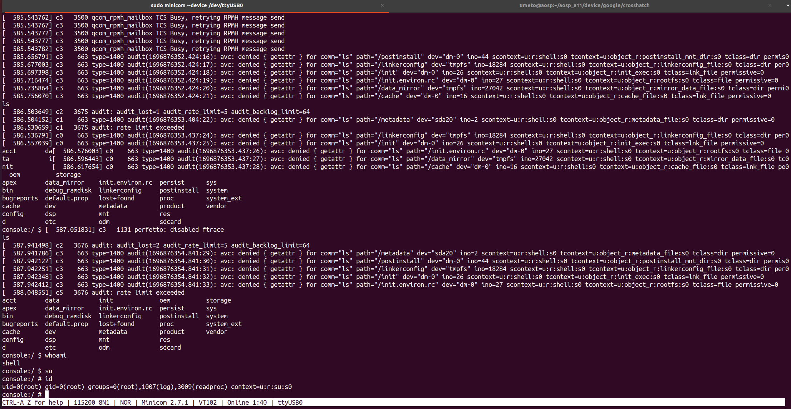
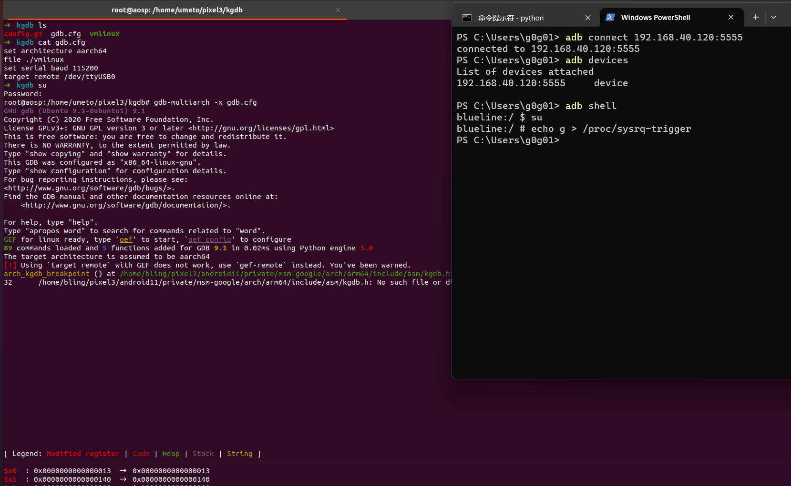

为 pixel3 制作一根 KGDB 调试线
关于android真机的调试，网络上的资料并不多。之前复现漏洞时，看见过一些大佬用printk来调试，这是个好方法（毕竟linus大神都用printk）。但是如果我不想频繁地添加printk代码，然后一遍遍重新编译内核，有没有其他办法呢？
在搜索过程中，发现有两种基于KGDB的调试方法：
制作调试线接出串口：本质是谷歌在pixel系列的手机上，将高通芯片上uart引出到手机的type-c接口。
最早介绍该方法的文章：KGDB on Android: Debugging the kernel like a boss
关于如何制作调试线：
How To Make Your Own Pixel 2, Pixel 3 or Pixel 4 Debugging Cable
Enabling the Serial Port (or Console, UART) on Google Pixel Phones
关于如何结合kgdb和调试线：
将USB口强转为串口
英文原文：Practical Android Debugging Via KGDB
涉及代码：KernelDebugOnNexus6P
中文翻译：【技术分享】使用KGDB实现Android内核调试
1
该方法在pixel1上测试失败，编译内核的过程中，被替换的 drivers/usb/dwc3/gadget.c 文件报了错。
本文记录的是第一种调试方法，涉及如下几个步骤：
- 制作调试线：从手机的Type-C中接出串口信号
- 编译userdebug版本的AOSP：开启串口的shell调试
- 编译用于调试的内核：开启kgdb并关闭watchdog
- 接线调试：通过串口线连接到kgdb
制作调试线
pixel3 手机的type-c接口中A8和B8口（但如下淘宝买的板子上测出是A5和B5）被用作UART的收发口，将它们接出，再通过ttl转usb连接到pc即可。
需要两个东西：
- type-c 测试板（公头）
- usb转串口线（虽然其他帖子强调需要1.8v规格的电平，但经过测试PL2303即可成功连接）

把它们连接起来，如下图（为了方便接线，我们还焊了个座）：

编译userdebug版本的AOSP
只有userdebug版本的系统镜像才能在串口上拿到一个 console shell
环境：ubuntu20.04虚拟机，8核，22G内存，350G SSD存储。
耗时：10h左右。
步骤如下：
1 | # 下载aosp源码 |
编译完成后，刷入手机，测试能否成功开机
1 | # 在刚刚编译完成的窗口中执行（因为需要复用编译过程中用到的一些环境变量） |
开机测试手机能否正常使用，没什么问题的话，就可以编译我们自己的内核了。
编译用于调试的内核
主要是在内核编译选项中开启kgdb并关闭硬件的watchdog
下载内核源码
1
2
3
4
5
6
7
8# 下载目标分支涉及的源码文件
repo init -u https://android.googlesource.com/kernel/manifest -b android-msm-crosshatch-4.9-android11-qpr2
repo sync
# 切换build分支版本，因为最新版本的build目录不支持build/build.sh的编译方式
cd build
git checkout f4f2d2f0665c6031f67d8c84ff98b7d22d5abac1
# ps. checkout的tag是从android12的default.xml中获取的改内核编译选项
1
2
3
4
5
6
7cd private/msm-google
export ARCH=arm64 # this is the magic line
make b1c1_defconfig # This sets up the config for my hardware. Yours is probably different.
make menuconfig # 更改编译选项，或直接改.config文件。更改完毕后，继续执行
make savedefconfig
cp defconfig arch/arm64/configs/b1c1_defconfig # or whatever your hardware configuration is
make mrproperconfig中需要
1
2
3
4
5
6
7
8
9
10
11
12
13# 关闭的选项 ！！！如果不关watchdog，kgdb挂上之后手机会重启！！！
CONFIG_MSM_WATCHDOG_V2=n # 老版本手机
CONFIG_QCOM_WATCHDOG_V2=n # 新版本手机
CONFIG_STRICT_MEMORY_RWX=n
CONFIG_MSM_WATCHDOG_CTX_PRINT=n # 老版本手机
CONFIG_QCOM_WATCHDOG_CTX_PRINT=n # 新版本手机
# 开启的选项
CONFIG_CONSOLE_POLL=y
CONFIG_KGDB=y
CONFIG_KGDB_SERIAL_CONSOLE=y
CONFIG_KGDB_KDB=y
CONFIG_KDB_KEYBOARD=y
CONFIG_KDB_DEFAULT_ENABLE=0x1编译内核
1
2
3# 编译内核
cd ../
build/build.sh改内核启动参数/proc/cmdline
编译boot.img之前，在aosp源码目录
device/google/crosshatch中找到 BoardConfig-common.mk，更改 BOARD_KERNEL_CMDLINE 即可1
2
3
4
5
6
7
8
9BOARD_KERNEL_CMDLINE += console=ttyMSM0,115200n8 androidboot.console=ttyMSM0 printk.devkmsg=on
BOARD_KERNEL_CMDLINE += msm_rtb.filter=0x237
[...]
# 改成了
BOARD_KERNEL_CMDLINE += console=ttyMSM0,115200n8 androidboot.console=ttyMSM0 kgdboc=ttyMSM0,115200 kgdbcon nokaslr printk.devkmsg=on
BOARD_KERNEL_CMDLINE += msm_rtb.filter=0x237
# 或者改成下面这样
BOARD_KERNEL_CMDLINE += console=ttyMSM0,115200n8 androidboot.console=ttyMSM0 kgdboc=ttyMSM0,115200 kgdbretry=4 nokaslr printk.devkmsg=on
BOARD_KERNEL_CMDLINE += msm_rtb.filter=0x237将内核镜像打包成boot.img
1
2
3
4
5
6
7
8
9
10
11
12
13
14
15
16
17
18# 进入aosp源码目录，初始化环境
cd ~/aosp/
source build/envsetup.sh
lunch aosp_blueline-userdebug
# 将目标文件Image.lz4导出到环境变量
export TARGET_PREBUILT_KERNEL=/home/bling/pixel3/android11/out/android-msm-pixel-4.9/dist/Image.lz4
# 编译
make -j4 bootimage
# 等待编译完成，在 out/target/product/blueline/ 目录下查看生成的boot.img文件
# 然后，进入fastboot，通过如下命令将新镜像刷入手机即可
adb reboot bootloader
fastboot flash boot out/target/product/blueline/boot.img
fastboot oem uart enable # 启用uart串口调试功能
fastboot reboot刷入新的ko文件，修复触屏不好使等问题
1
2
3
4adb root
adb remount -R # adb remount & adb reboot
adb push out/android-msm-pixel-4.9/dist/*.ko /vendor/lib/modules/
adb reboot
接线调试
接好线后，可以先看看串口输出和输入功能是否正常
1 | sudo minicom --device /dev/ttyUSB0 |
如下图说明是正常的

然后，关闭minicom界面，不然 /dev/ttyUSB0 被占住，后续gdb调试时无法使用它。
接下来的步骤中，由于我们没有把type-c的USB功能引出，产生了一个冲突：当调试线占用了type-c接口时，我们还需要通过adb shell中执行一条命令用来触发kgdb。
为了解决这个矛盾，我们需要提前设置好无线adb，执行如下几个步骤：
设置无线adb
1
2
3
4
5adb tcpip 5555
adb connect 192.168.40.123:5555
adb shell
blueline:/ $ su
blueline:/ #adb shell 中执行命令触发kgdb（无线连接）
1
blueline:/ # echo g > /proc/sysrq-trigger
linux pc 主机中使用gdb调试（调试线连接）—— 这一步跟上一步尽量别间隔太长时间
1
2
3
4
5
6su root
gdb-multiarch
(gdb) set architecture aarch64
(gdb) file ./vmlinux
(gdb) set serial baud 115200
(gdb) target remote /dev/ttyUSB0
断下情况如图：


但是，有几个问题，暂时不知道原因：
- 可以设置一个断点，然后
c继续执行，但是单步si就会崩溃重启 - 同时设置多个断点时，
c继续执行就不生效了
参考文章
Building a Nexus 4 UART Debug Cable
Android: Kernel Debugging with KGDB
Google Pixel UART kernel debug cable
Serial debugging:Cable schematics
How to specify a custom defconfig file in Android 10 Kernel compilation